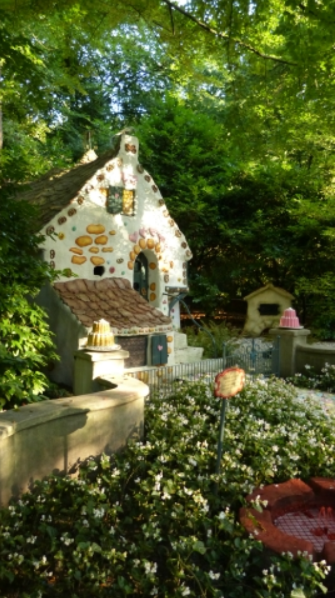

De bakermat van de Efteling
Zoals bijna iedere Eftelingliefhebber wel weet is het Sprookjesbos dé attractie die de Efteling bekend heeft gemaakt. In 1952 is Anton Pieck de uitdaging aangegaan om van een 'simpele' speeltuin iets moois te maken. Of zoals Anton Pieck het zelf formuleerde: 'De moderne speeltuinen van tegenwoordig, da's allemaal ijzer en beton en die voldoen aan alle eisen die een speeltuin hebben moet. En toch vind ik dat de kinderen erbij tekort komen, omdat zo'n speeltuin helemaal geen sfeer hééft! En de Efteling is van mijn kant een poging om iets voor kinderen te maken wat ze bij blijft en dat sfeer heeft.' En dat is hem wel gelukt. In het eerste jaar bestond het Sprookjesbos uit maar 9 sprookjes. In de vier jaren erna zijn er nog eens 4 sprookjes aan toegevoegd. Behalve in het Sprookjesbos werden ook op het Anton Pieckplein sprookjes geplaatst. Zo zijn er in de loop der jaren onder andere 'Zwaan, kleef aan!', 'De Ganzenhoedster' en 'Ezeltje strek je!' (van 1956 tot 1984) bijgebouwd.

Helaas zijn alle sprookjes niet meer zo te zien zoals ze er bijna 50 jaar geleden bij lagen. Zo heeft 'De Chinese Nachtegaal' in 1979 plaats moeten maken voor 'Draak Lichtgeraakt'. En diverse sprookjes hebben een facelift ondergaan of zijn uitgebreid. In een Sprookjesbos horen natuurlijk kabouters en daarom heeft de Efteling tussen 1972 en 1980 er zelfs een compleet Kabouterdorp gebouwd. Hierna heeft de Efteling wat rustiger aangedaan met het bouwen van sprookjes in het bos. Tussen 1981 en 1989 is er eigenlijk maar één nieuw sprookje bijgekomen namelijk 'De Trollenkoning'. Behalve de bouw van 'De Trollenkoning' in 1988 heeft de Efteling alleen maar 'Ezeltje strek je!' verplaatst van het Anton Pieckplein naar het Herautenplein en 'Doornroosje' uitgebreid.
Na deze periode is het 10 jaar stil geweest in het Sprookjesbos. Pas in 1998 kwamen er twee nieuwe bewoners bij: Repelsteeltje en Klein Duimpje en de Reus. En in 1999 werden er geheel in stijl met het thema van dat jaar (Efteling: Schatkamer van de sprookjes) nog eens drie aan toegevoegd. Of eigenlijk alleen 'De Chinese Nachtegaal', want 'Ezeltje strek je!' en 'Sneeuwwitje' woonden al langer in het Sprookjesbos. Het lijkt haast alsof de Efteling om de zoveel jaar intensief aandacht besteedt aan het Sprookjesbos (wat nieuwe sprookjes betreft), om vervolgens jaren niet meer naar het bos om te kijken. Maar ondanks dit alles, verbaast de Efteling 'vriend en vijand' met hun nieuwe technieken. Denk alleen maar eens aan de toverspiegel uit Sneeuwwitje.
In 2000 is er niets nieuws bij gekomen, maar er zijn wel veel kleinere dingen veranderd en/of toegevoegd. Zo hebben de paddenstoelen in het Kabouterdorp een nieuw likje verf gekregen. En helaas is dit maar al te goed te zien omdat een paddenstoel nog de 'oude' verflaag heeft, welke veel mooier is. Ook het huisje van Hans en Grietje ziet er vanaf dit jaar 'zoeter' uit dan voorheen. Een van de mooiste veranderingen zijn wel de rookeffecten. Uit diverse schoorstenen komt echte rook, en zelfs Draak Lichtgeraakt blaast weer rook! Maar dit zijn lang niet alle veranderingen. Zo zijn er buiten de fonkelende diamanten in de schatkist bij Draak Lichtgeraakt, 's avonds her en der 'ogen' te zien die je bespieden.
In de toekomst zal er nog zeker een aantal sprookjes worden bijgebouwd. Naast 'De Tuinman en de Fakir' ligt nog een redelijk stuk grond die men kan gebruiken. Echter moet wel gezegd worden dat er vanaf het Herautenplein niet echt meer gesproken kan worden van een bos. Want wat eens een siertuin was met weinig bomen is nu een klein bos met het paleis uit 'De Chinese nachtegaal'. In 2001 is er in het Sprookjesbos wederom een nieuwe bewoonster bij gekomen namelijk: Raponsje. Het sprookje is uitgebeeld als een hoge toren waarin Raponsje zit. En wat betreft het aantal sprookjes die de Efteling nog niet heeft is er keuze te over. Denk maar eens aan 'De rattenvanger van Hamelen, Duimelijntje, Jaap en de Bonestaak, De Gelaarsde Kat, Het Lelijke Jonge Eendje... etc etc'. Toch kwam de Efteling eind juli 2003 heel onverwacht met een ander sprookje: De Bremer Stadsmuzikanten vormen de bovenzijde van een fontein op het vernieuwde Anton Pieckplein. Tijdens de Winter Efteling 2004/2005 opende het park op de drempel van het Hans Christian Andersenjaar Het meisje met de zwavelstokjes.
In 2010 kwam een sprookje tot leven dat de Efteling zelf bedacht heeft en die al een aantal jaren op de televisie te zien was, namelijk de Sprookjesboom. De enorme eik verteld, net als in de televisieserie verhalen over de belevenissen van de Sprookjesbosbewoners. De Sprookjesboom is bijna aan het einde van het Sprookjesbos geworteld. Eind 2012, bij de start de Winter Efteling is de route in het Sprookjesbos na Het meisje met de zwavelstokjes een stukje verlengd en leid nu ook langs De nieuwe kleren van de Keizer. Op 1 juni 2015 weet de Efteling iedereen te verrassen met het nieuws dat Pinokkio een plek gaat krijgen in het Sprookjesbos. Pinokkio zal gebouwd worden in het oude deel van het Sprookjesbos, om precies te zijn tussen Roodkapje en De rode schoentjes. Tegelijk met de opening van Pinokkio zouden de sprookjes van Roodkapje en De rode schoentjes ook een opknapbeurt krijgen. Echter, bij Roodkapje bleek al snel dat er meer aan de hand was dan gedacht, waarna besloten werd om het huisje in zijn geheel te herbouwen.
Eind 2018 'ontdekt' de Efteling een nieuwe boomsoort in het Sprookjesbos. Het gaat om een oude boom tussen Het meisje met de zwavelstokjes en de Kleren van de keizer, die naar de naam Kniesoor luistert. Kniesoor is een knorrige babbelboom die passerende bezoekers zal aanspreken en werkt samen met de Efteling app. Een grotere verandering vindt echter een jaar later plaats als het relatief onbekende sprookje van De zes zwanen aan het bos wordt toegevoegd. Dit sprookje zal worden gerealiseerd tussen de grot van Sneeuwwitje en Assepoester.
Rondje door het Sprookjesbos
Op deze site is het mogelijk om alle sprookjes uit het Sprookjesbos na te lezen, in de volgorde van de officiële wandelroute van Doornroosje tot De Chinese Nachtegaal, zoals ze hier links staan weergegeven. De sprookjes worden gecompleteerd met de sprookjes die elders in de Wereld van de Efteling te vinden zijn. Bekijk ook de Fotogalerij van het Sprookjesbos, waarbij elk sprookje uit het bos in beeld is gebracht.

De geschiedenis van het Sprookjesbos in jaartallen
Hieronder vind je een overzicht met alle sprookjes uit het Sprookjesbos.
| Sprookjesbos 1952 | Het kasteel van Doornroosje |
| De Chinese Nachtegaal (in 1979 vervangen door Draak Lichtgeraakt) | |
| De put van Vrouw Holle | |
| De grot van Sneeuwwitje | |
| Roodkapje | |
| De Sprekende Papegaai | |
| De zes Dienaren (Langnek) | |
| De muzikale Paddestoelen | |
| Het Herautenplein | |
| Kleine boodschap | |
| De kikkerkoning | |
| De Magische Klok | |
| Sprookjesbos 1953 | De Rode Schoentjes |
| Interieur van 't Kasteel van Doornroosje |